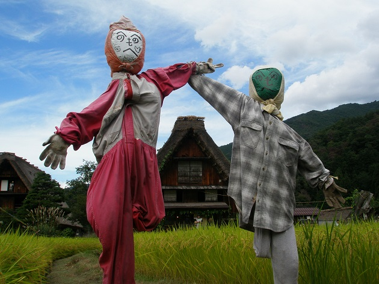

首頁 │ 三原典 │ 演講稿 │ 教理 │ 文章 │ 學習資源
只要是人 謝匡宇  這個月底海外部工作結束後，我打算給自己放一個半月的假。第一站是先到西日本中國地區旅遊。 前幾天與同事M君商量以後，決定把整個計劃延後一天。M君希望我與他的會長一起吃飯。會長因為在台灣有信者想知道台灣的事情，因此M君邀請我到位在他家附近的教會住一晚，隔天一起參加教會的月次祭。我當然答應了。 因為訂好4間旅館，為了調行程全部都要重訂一次，幸好3月初是淡季，全部都順利訂到位，還找到價位更低的房間。能夠提供台灣的資訊，了解M君家的情況，無論如何都是第一順位。 M君的家裡是佈教所。雖然如此，M君卻總是給人一種沮喪悲觀的印象。有些人覺得他有趣，但我想知道他有什麼困難之處，希望能多少舒解他常常處於緊張的情緒。過去2年多來，M君常常找我喝咖啡或吃飯，也曾經邀請我參加家裡的月次祭，但後來又不了了之。這次有機會到M君家附近的教會過夜，也能認識M君的家人，我想這是找出問題、解決問題的好機會。 其實剛來日本的時候只是學生，一直覺得自己身在異地，語言文化都沒有當地人熟悉，對於天理教的事，一直把自己定位在輔助學習的角色。後來，在大阪生活期間和教會發生一些事情，有一段時間變得很沮喪，甚至對天理教心灰意冷，覺得日本人很虛偽，不太敢再跟日本人深交。 不過事情發生幾個月後，我突然明白，其實來日本，不代表一定要把自己當成配角，而且即使信仰經歷沒有別人長，但不代表教友、教會的人就不需要被拯救。 心裡有了轉變以後，我重新了解到，身為用木，要拯救的是「人」，不分日本人，台灣人，資深或資淺，只要不開朗的人都是拯救的對象。我對天理教重拾信心，也再次有勇氣跟日本人真心交友。 這其中存在一個疑問，就是：「你憑什麼認為自己應該拯救別人？」 對於非天理教者，只要向他（她）傳達教理，如康樂生活、八種灰塵，帶他回原地，就是很大的拯救行動。但是對同樣是天理教者，這些道理對方都懂，甚至懂得比你多，這時候，你能為他做什麼？ 這確實需要一些對信仰的自信，還有持續關心對方的耐心。有的人原本不知道天理教，一旦知以後，有時候可以在很短的時間內就體會信仰喜悅，馬上變成另一個人。但同樣是天理之道的人，這種改變勢必是緩慢的，因為整個信仰的新鮮感早已消失，要面對的是自己長久以來解不開的心結，解決的唯一辦法，是和自己心裡陰暗的部分直接對決。 我並不是天生樂觀開朗的人。在接觸天理教以前，有很長的時間找不到人生的方向，也曾經陰鬱過。不過因為有這段經驗，我很珍惜教理教導的生活方法，而且因為自己的經驗，我知道一個人處在憂鬱沮喪的時候，就像飛機駕駛明明知道方向盤必須往上拉，卻怎麼拉也拉不起來。 對於Ｍ君，我不需要告訴他道理，只需要盡好一個朋友的角色，聽他說話，讓他知道有人一直在支持他。這次能認識M君的家人和會長，對我們來說都是一種進步。 如果說我憑什麼認為自己可以幫助他。我只能說，我很確定，現在這個時刻我比他開朗。對我來說，這就是充分足夠的理由。 (2016-0218) |